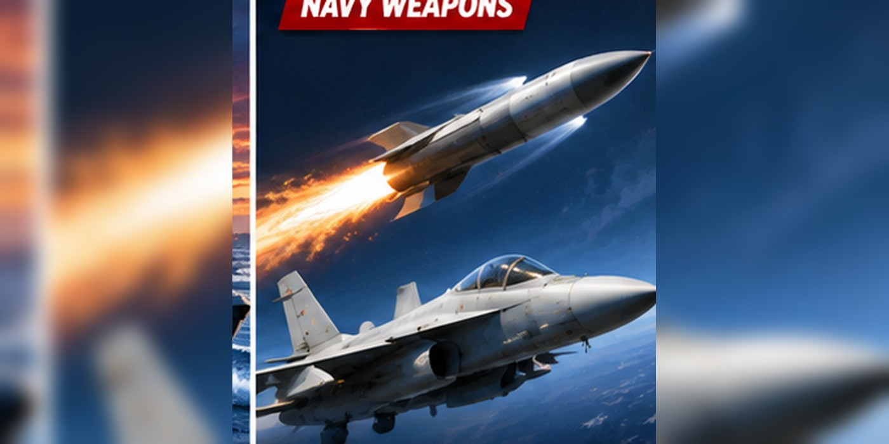

Blackbeard Hypersonic Missile: Navy’s $200 Million Order and F/A-18 Tests Explained
A new image of Blackbeard on a Super Hornet renews attention on a Navy hypersonic strike weapon.

A new look at Blackbeard
Castelion recently published an image of the Blackbeard hypersonic missile mounted beneath an F/A-18F Super Hornet. The image follows flight-testing disclosures and a September Navy production delivery order.
What the Navy ordered
The U.S. Navy announced a production delivery order worth up to $200 million in September 2026. The order covers an initial lot of Blackbeard missiles and related manufacturing, assembly, testing and delivery.
What is the weapon intended to do?
Blackbeard is described as an air-launched, high-speed weapon for attacking maritime and land targets from carrier-based aircraft. Its purpose is to give naval aviators additional standoff options against defended targets.
When will it enter service?
The Navy has discussed accelerated fielding, but an image of a test missile does not mean the weapon is already operational across the fleet. Exact operational dates and capabilities should not be assumed.